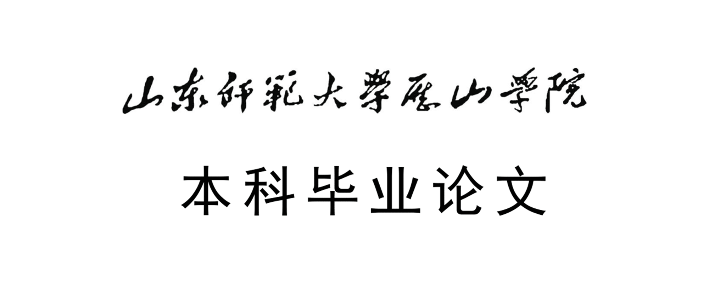

毕业论文-生成艺术在现代网页设计中的创新及应用研究
领域：艺术/平面设计
类别：论文
时间：2019/05/04
生成艺术对于社会的应用领域非常广泛，对生成艺术中编程的应用和优化可以促进计算机领域中人工智能、机器学习等主流研究方向的发展；设计领域中我们可以通过使用计算机生成许多解决方案，从而得到最优...

毕业论文-生成艺术在现代网页设计中的创新及应用研究
浏览毕业论文内容的pdf文件：生成艺术在现代网页设计中的创新及应用研究.pdf
摘要：生成艺术是指艺术家通过在创作过程中不同程度的使用自主系统创作出艺术作品的一种艺术实践，这其中的自主系统通常是指一组自然语言规则，计算机程序，机器或其他程序发明等，这些系统在艺术作品的完成过程中起到十分重要的作用。生成艺术的影响十分广泛，工业设计、建筑、音乐、电影、动画、游戏甚至文学都不同程度的受其影响。而当代新技术的应用也使生成艺术得到了较好的发展。
本文的前半部分是对生成艺术的内容和发展现状及其对网页设计之间的关系进行深入探究。本文的后半部分通过使网页设计和生成艺术相结合，以视觉传达设计为主要类型，以网页设计为主要方式，以 HTML、CSS 和 JavaScript 为主要计算机语言，使计算机产出大量的相同风格的艺术作品，从而探究生成艺术在现代平面设计中的创新及应用研究。